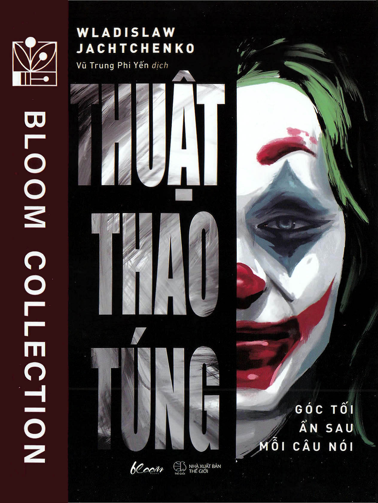

« Back
Thuật Thao Túng, Góc Tối Ẩn Sau Mỗi Câu Nói
By Wladislaw Jachtchenko

LỜI NÓI ĐẦU
DẪN NHẬP
TOP 10 KỸ NĂNG THAO TÚNG HẰNG NGÀY
1. Ra Vẻ Tự Tin Dù Bạn Chẳng Biết Gì
2. Mê Hoặc Người Khác Bằng Ngoại Hình
3. Xây Dựng Nhanh Một Mối Quan Hệ Thân Thiết
4. Tạo Ra Lời Nói Dối Hoàn Hảo
5. Cưỡng Ép Đồng Thuận
6. Lèo Lái Cuộc Hội Thoại Bằng Những Câu Hỏi
7. Làm Người Khác Choáng Ngợp Trong Cảm Xúc
8. Tấn Công Vào Nội Dung – Bất Hoạt Tâm Trí
9. Công Kích Cá Nhân – Khiến Đối Thủ Câm Nín
10. Dẹp Ngay Những Cuộc Cãi Cọ
BA CHIẾC HỘP CHIÊU TRÒ GIAO TIẾP XẤU XA
I HỘP CHIÊU TRÒ THỨ Nhấtnhững Thiên Kiến Nhận Thức
II HỘP CHIÊU TRÒ THỨ Hainhững Thủ Thuật Bằng Lời
III HỘP CHIÊU TRÒ THỨ Balập Luận Giả
SỰ (VÔ) ĐẠO ĐỨC CỦA VIỆC THAO TÚNG
1. Đạo Đức Là Gì?
2. Các Giai Đoạn Đạo Đức Của Thao Túng
KẾT LUẬN
Chú Thích